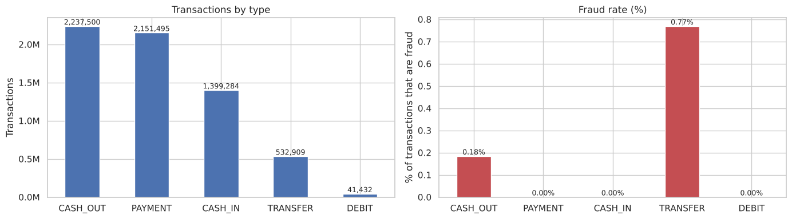
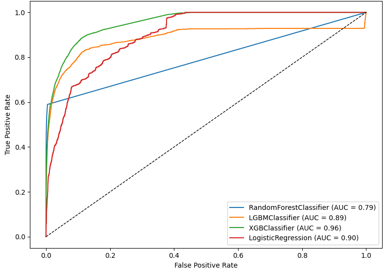

Fraud is very rare in mobile money: 0.13% of 6.3 million transactions. The goal was to detect it without letting the model learn shortcuts that would not exist in production.
The problem
Detect fraudulent transactions in a mobile money system where fraud is very rare. The data comes from PaySim, a synthetic dataset built from real mobile money logs.
Approach
- Exploratory analysis. Amount distributions on a log scale, and fraud by transaction type and by origin and destination.
- Feature engineering. Created a transaction direction feature (customer to customer, customer to merchant) from the account IDs, then dropped the IDs so the models could not memorise accounts.
- Leakage control. Removed the balance columns. Fraudulent transactions are cancelled in the simulation, so the balances reveal the label.
- Modelling. Stratified 70/30 split, comparing Logistic Regression, Random Forest, LightGBM and XGBoost.
Results
All fraud happens in TRANSFER and CASH_OUT transactions between two customer accounts. A transfer is about 4 times more likely to be fraud than a cash out.


XGBoost ranks transactions best. At the default 0.5 threshold, however, it catches only 17% of frauds, with 92% precision. With this level of imbalance, the threshold should be set from the cost of a missed fraud versus the cost of a false alarm.


| Model | Precision (fraud) | Recall (fraud) | ROC AUC |
|---|---|---|---|
| XGBoost | 0.92 | 0.17 | 0.956 |
| Random Forest | 0.72 | 0.35 | 0.794 |
| LightGBM | 0.59 | 0.20 | 0.886 |
| Logistic Regression | 0.18 | 0.00 | 0.901 |
Next steps
Report PR-AUC and precision-recall curves, tune the threshold to a target recall, try class weighting, validate on later time periods, and add behavioural features such as hour of day and number of transactions per account.